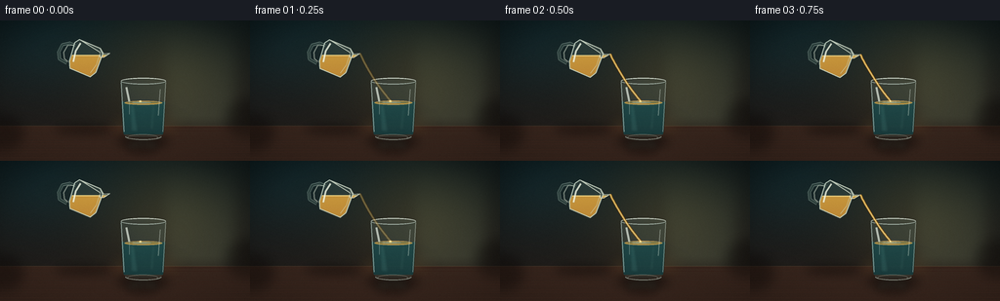
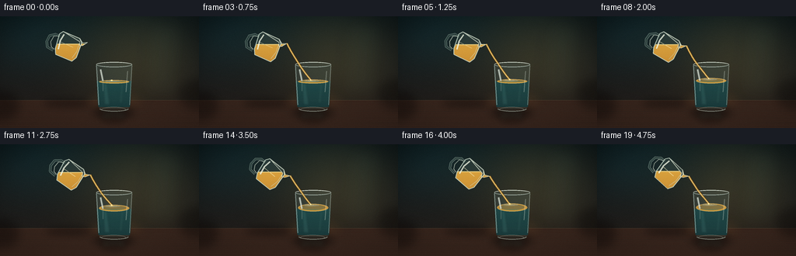
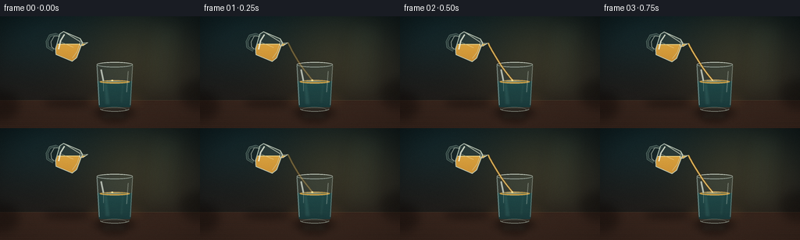
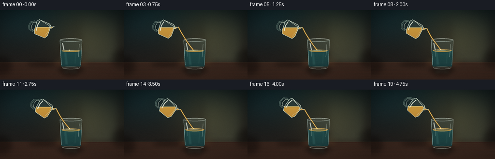
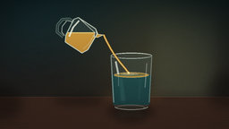
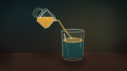

CODING AGENTS AS PIXEL WORLD MODELS
traex/DeepSeek-V4.1-Flash · material_0023
点击播放 · 原生 RGB 像素
逐轮保存的候选
回放视频、检查图与代码变化。
每份候选均可单独播放。实际图片检查记录在下方工具轨迹中。
候选 01播放与检查图
点击播放 · 原生 RGB 像素


展开代码变化
--- 上一保存版本
+++ 本次保存版本
@@ -0,0 +1,477 @@
+from pathlib import Path
+import math
+
+import numpy as np
+from PIL import Image, ImageDraw, ImageFilter
+
+import artifact_io
+
+
+CASE_DIR = Path(__file__).resolve().parent
+W, H = 1024, 576
+OUT_W, OUT_H = 256, 144
+N_FRAMES = 20
+FPS = 4.0
+
+
+def clamp(value, low=0.0, high=1.0):
+ return max(low, min(high, value))
+
+
+def smoothstep(value):
+ value = clamp(value)
+ return value * value * (3.0 - 2.0 * value)
+
+
+def mix(a, b, amount):
+ return tuple(int(round(a[i] * (1.0 - amount) + b[i] * amount)) for i in range(len(a)))
+
+
+def rgba(color, alpha=255):
+ return tuple(color[:3]) + (int(alpha),)
+
+
+def make_vertical_gradient(top, bottom, width=W, height=H):
+ y = np.linspace(0.0, 1.0, height, dtype=np.float32)[:, None, None]
+ top_arr = np.asarray(top, dtype=np.float32)[None, None, :]
+ bottom_arr = np.asarray(bottom, dtype=np.float32)[None, None, :]
+ grad = top_arr * (1.0 - y) + bottom_arr * y
+ return np.repeat(grad, width, axis=1)
+
+
+def blurred_layer(size, draw_fn, blur=0):
+ layer = Image.new("RGBA", size, (0, 0, 0, 0))
+ draw_fn(ImageDraw.Draw(layer))
+ if blur:
+ layer = layer.filter(ImageFilter.GaussianBlur(blur))
+ return layer
+
+
+def composite(base, layer):
+ return Image.alpha_composite(base.convert("RGBA"), layer.convert("RGBA"))
+
+
+def polygon_mask(points, size=(W, H), blur=0):
+ mask = Image.new("L", size, 0)
+ ImageDraw.Draw(mask).polygon(points, fill=255)
+ if blur:
+ mask = mask.filter(ImageFilter.GaussianBlur(blur))
+ return np.asarray(mask, dtype=np.float32) / 255.0
+
+
+def ellipse_points(cx, cy, rx, ry, count=96, start=0.0, end=2.0 * math.pi):
+ return [
+ (
+ cx + rx * math.cos(start + (end - start) * i / count),
+ cy + ry * math.sin(start + (end - start) * i / count),
+ )
+ for i in range(count + 1)
+ ]
+
+
+def glass_outline(cx, top_y, bottom_y, top_w, bottom_w):
+ left_top = cx - top_w / 2.0
+ right_top = cx + top_w / 2.0
+ left_bottom = cx - bottom_w / 2.0
+ right_bottom = cx + bottom_w / 2.0
+ points = [
+ (left_top, top_y),
+ (right_top, top_y),
+ (right_bottom + 1, bottom_y - 20),
+ (right_bottom - 2, bottom_y - 6),
+ (right_bottom - 15, bottom_y + 4),
+ ]
+ points += ellipse_points(cx, bottom_y, bottom_w / 2.0 - 7, 8, count=44, start=0.0, end=math.pi)
+ points += [
+ (left_bottom + 15, bottom_y + 4),
+ (left_bottom + 2, bottom_y - 6),
+ (left_bottom - 1, bottom_y - 20),
+ ]
+ return points
+
+
+def rotate_point(x, y, cx, cy, angle):
+ c, s = math.cos(angle), math.sin(angle)
+ return cx + x * c - y * s, cy + x * s + y * c
+
+
+def transformed_points(points, cx, cy, angle):
+ return [rotate_point(x, y, cx, cy, angle) for x, y in points]
+
+
+def background_layer(frame_index):
+ top = (14, 25, 27)
+ bottom = (36, 28, 24)
+ rgb = make_vertical_gradient(top, bottom).astype(np.float32)
+
+ yy, xx = np.mgrid[0:H, 0:W]
+ warm_glow = np.exp(
+ -(
+ ((xx - 705.0) / 300.0) ** 2
+ + ((yy - 220.0) / 235.0) ** 2
+ )
+ )
+ cool_glow = np.exp(
+ -(
+ ((xx - 190.0) / 300.0) ** 2
+ + ((yy - 115.0) / 190.0) ** 2
+ )
+ )
+ rgb += warm_glow[:, :, None] * np.array([30.0, 25.0, 12.0])
+ rgb += cool_glow[:, :, None] * np.array([2.0, 11.0, 13.0])
+
+ # Soft vertical window light, kept low-contrast so the glass remains the subject.
+ light = np.exp(-((xx - 820.0) / 150.0) ** 6)
+ light *= np.clip((yy - 20.0) / 390.0, 0.0, 1.0) * np.clip((480.0 - yy) / 90.0, 0.0, 1.0)
+ rgb += light[:, :, None] * np.array([17.0, 22.0, 17.0])
+
+ vignette = np.clip(1.18 - 0.42 * (((xx - W / 2) / (W * 0.72)) ** 2 + ((yy - H / 2) / (H * 0.8)) ** 2), 0.55, 1.0)
+ rgb *= vignette[:, :, None]
+
+ img = Image.fromarray(np.clip(rgb, 0, 255).astype(np.uint8), "RGB").convert("RGBA")
+
+ # Table plane and its softly lit far edge.
+ table = Image.new("RGBA", (W, H), (0, 0, 0, 0))
+ draw = ImageDraw.Draw(table)
+ draw.rectangle((0, 432, W, H), fill=rgba((53, 35, 27), 255))
+ draw.line((0, 432, W, 432), fill=rgba((147, 112, 78), 72), width=2)
+ for i in range(18):
+ y = 447 + i * 8 + int(3 * math.sin(i * 1.7))
+ alpha = max(10, 34 - i)
+ draw.line((0, y, W, y + int(3 * math.sin(i * 0.8))), fill=rgba((130, 86, 58), alpha), width=1)
+ img = composite(img, table)
+
+ # A blurred glow pooled on the tabletop behind the glass.
+ pool = blurred_layer(
+ (W, H),
+ lambda d: d.ellipse((425, 386, 760, 482), fill=rgba((192, 133, 66), 38)),
+ blur=35,
+ )
+ return composite(img, pool)
+
+
+def add_table_reflections(img, cx, top_y, bottom_y):
+ reflection = Image.new("RGBA", (W, H), (0, 0, 0, 0))
+ draw = ImageDraw.Draw(reflection)
+ draw.rounded_rectangle(
+ (cx - 65, bottom_y + 3, cx + 58, bottom_y + 63),
+ radius=30,
+ fill=rgba((55, 105, 101), 38),
+ )
+ draw.rectangle((cx - 56, bottom_y + 5, cx + 42, bottom_y + 53), fill=rgba((92, 135, 118), 18))
+ draw.ellipse((cx - 66, bottom_y + 36, cx + 58, bottom_y + 76), fill=rgba((28, 18, 14), 80))
+ reflection = reflection.filter(ImageFilter.GaussianBlur(13))
+ return composite(img, reflection)
+
+
+def draw_main_glass(img, t):
+ cx = 587.0
+ top_y = 248.0
+ bottom_y = 473.0
+ top_w = 186.0
+ bottom_w = 164.0
+ water_y = 337.0
+ inner_w = 156.0
+
+ body_pts = glass_outline(cx, top_y, bottom_y, top_w, bottom_w)
+ body_mask = polygon_mask(body_pts, blur=0.55)
+ body_mask_img = Image.fromarray((body_mask * 255).astype(np.uint8), "L")
+
+ # Shadow and a cool, refracted back edge.
+ shadow = blurred_layer(
+ (W, H),
+ lambda d: d.ellipse((cx - 105, bottom_y - 7, cx + 102, bottom_y + 48), fill=rgba((9, 8, 7), 145)),
+ blur=20,
+ )
+ img = composite(img, shadow)
+
+ back = Image.new("RGBA", (W, H), (0, 0, 0, 0))
+ draw = ImageDraw.Draw(back)
+ draw.polygon(body_pts, fill=rgba((102, 139, 132), 46))
+ draw.ellipse(
+ (cx - top_w / 2.0, top_y - 13, cx + top_w / 2.0, top_y + 14),
+ fill=rgba((143, 177, 168), 36),
+ outline=rgba((218, 236, 225), 138),
+ width=4,
+ )
+ img = composite(img, back)
+
+ # Water body, clipped to the exact glass silhouette.
+ water_rgb = make_vertical_gradient((53, 119, 115), (9, 44, 49))
+ water_layer = Image.fromarray(water_rgb.astype(np.uint8), "RGB").convert("RGBA")
+ water_alpha = np.zeros((H, W), dtype=np.uint8)
+ water_alpha[334:468, 490:684] = 208
+ water_layer.putalpha(Image.fromarray(water_alpha, "L"))
+ water_arr = np.asarray(water_layer, dtype=np.float32)
+ water_arr[:, :, 3] *= body_mask
+ water_layer = Image.fromarray(np.clip(water_arr, 0, 255).astype(np.uint8), "RGBA")
+ img = composite(img, water_layer)
+
+ # Refracted vertical bands and faint suspended highlights.
+ liquid_glow = Image.new("RGBA", (W, H), (0, 0, 0, 0))
+ d = ImageDraw.Draw(liquid_glow)
+ d.polygon(
+ [(cx - 56, water_y + 8), (cx - 38, water_y + 8), (cx - 22, bottom_y - 17), (cx - 50, bottom_y - 17)],
+ fill=rgba((132, 211, 197), 25),
+ )
+ d.polygon(
+ [(cx + 36, water_y + 12), (cx + 48, water_y + 12), (cx + 40, bottom_y - 25), (cx + 26, bottom_y - 25)],
+ fill=rgba((144, 205, 184), 17),
+ )
+ liquid_glow = liquid_glow.filter(ImageFilter.GaussianBlur(5))
+ arr = np.asarray(liquid_glow, dtype=np.float32)
+ arr[:, :, 3] *= body_mask
+ img = composite(img, Image.fromarray(np.clip(arr, 0, 255).astype(np.uint8), "RGBA"))
+
+ # Oil floats on the water, thickening slowly as the pour continues.
+ oil_amt = smoothstep((t - 0.03) / 0.9)
+ oil_thickness = 4.0 + 11.0 * oil_amt
+ oil_top = water_y - oil_thickness
+ oil_layer = Image.new("RGBA", (W, H), (0, 0, 0, 0))
+ d = ImageDraw.Draw(oil_layer)
+ d.ellipse(
+ (cx - inner_w / 2.0, oil_top - 3, cx + inner_w / 2.0, water_y + 9),
+ fill=rgba((205, 148, 54), 210),
+ outline=rgba((255, 218, 133), 166),
+ width=2,
+ )
+ d.ellipse(
+ (cx - inner_w / 2.0 + 12, oil_top + 1, cx + inner_w / 2.0 - 15, water_y + 2),
+ fill=rgba((238, 190, 86), 80),
+ )
+ d.ellipse(
+ (cx - 47, oil_top + 1, cx + 32, oil_top + 7),
+ fill=rgba((255, 244, 190), 110),
+ )
+ arr = np.asarray(oil_layer, dtype=np.float32)
+ arr[:, :, 3] *= body_mask
+ img = composite(img, Image.fromarray(np.clip(arr, 0, 255).astype(np.uint8), "RGBA"))
+
+ # Concentric surface rings create the impression of a gentle continuous pour.
+ ripples = Image.new("RGBA", (W, H), (0, 0, 0, 0))
+ rd = ImageDraw.Draw(ripples)
+ contact_x = cx - 12.0
+ for k in range(3):
+ phase = (t * 2.5 + k / 3.0) % 1.0
+ rx = 9.0 + 43.0 * phase
+ ry = 2.0 + 8.0 * phase
+ alpha = int(105 * (1.0 - phase) * smoothstep((t - 0.02) / 0.12))
+ rd.ellipse(
+ (contact_x - rx, oil_top - ry + 2, contact_x + rx, oil_top + ry + 2),
+ outline=rgba((255, 225, 146), alpha),
+ width=2,
+ )
+ arr = np.asarray(ripples, dtype=np.float32)
+ arr[:, :, 3] *= body_mask
+ img = composite(img, Image.fromarray(np.clip(arr, 0, 255).astype(np.uint8), "RGBA"))
+
+ # Rim, side walls, base, and specular highlights.
+ glass_lines = Image.new("RGBA", (W, H), (0, 0, 0, 0))
+ d = ImageDraw.Draw(glass_lines)
+ d.line((cx - top_w / 2.0 + 2, top_y + 5, cx - bottom_w / 2.0 + 3, bottom_y - 16), fill=rgba((213, 238, 228), 128), width=5)
+ d.line((cx + top_w / 2.0 - 2, top_y + 5, cx + bottom_w / 2.0 - 3, bottom_y - 16), fill=rgba((232, 244, 229), 102), width=4)
+ d.arc((cx - bottom_w / 2.0 + 5, bottom_y - 15, cx + bottom_w / 2.0 - 5, bottom_y + 18), 12, 169, fill=rgba((206, 230, 216), 160), width=5)
+ d.arc((cx - top_w / 2.0, top_y - 13, cx + top_w / 2.0, top_y + 14), 186, 356, fill=rgba((242, 250, 234), 220), width=4)
+ d.arc((cx - top_w / 2.0, top_y - 13, cx + top_w / 2.0, top_y + 14), 8, 171, fill=rgba((211, 234, 220), 120), width=3)
+ d.line((cx - 70, top_y + 25, cx - 58, top_y + 84), fill=rgba((246, 255, 241), 175), width=9)
+ d.line((cx - 58, top_y + 84, cx - 58, top_y + 137), fill=rgba((214, 242, 228), 72), width=4)
+ d.line((cx + 69, top_y + 34, cx + 61, top_y + 142), fill=rgba((239, 252, 236), 82), width=5)
+ d.ellipse((cx - 64, bottom_y - 6, cx + 59, bottom_y + 18), outline=rgba((235, 246, 227), 92), width=3)
+ glass_lines = glass_lines.filter(ImageFilter.GaussianBlur(0.65))
+ img = composite(img, glass_lines)
+
+ # A soft bloom is added only around the strongest glass highlights.
+ bloom = glass_lines.filter(ImageFilter.GaussianBlur(8))
+ bloom_arr = np.asarray(bloom, dtype=np.float32)
+ bloom_arr[:, :, 3] *= 0.32
+ img = composite(img, Image.fromarray(np.clip(bloom_arr, 0, 255).astype(np.uint8), "RGBA"))
+ return img, (cx, top_y, bottom_y, water_y, oil_top)
+
+
+def draw_pitcher(img, t):
+ cx = 352.0 + 20.0 * smoothstep(t)
+ cy = 157.0 + 4.0 * math.sin(t * math.pi * 1.35)
+ angle = math.radians(23.0 + 19.0 * smoothstep(t))
+
+ local_body = [
+ (-68, -43),
+ (-55, -62),
+ (37, -62),
+ (55, -45),
+ (59, 36),
+ (45, 62),
+ (-45, 62),
+ (-59, 35),
+ ]
+ body_world = transformed_points(local_body, cx, cy, angle)
+ body_mask_np = polygon_mask(body_world, blur=0.7)
+ body_mask_img = Image.fromarray((body_mask_np * 255).astype(np.uint8), "L")
+
+ # Spout and rim.
+ spout_local = [(-55, -62), (37, -62), (58, -47), (82, -59), (65, -34), (52, -28), (44, -46)]
+ spout_world = transformed_points(spout_local, cx, cy, angle)
+
+ all_world = body_world + spout_world
+ pitcher_mask_np = polygon_mask(all_world, blur=0.7)
+ pitcher_mask_img = Image.fromarray((pitcher_mask_np * 255).astype(np.uint8), "L")
+
+ # Shadow on the table, far below the carafe.
+ shadow = blurred_layer(
+ (W, H),
+ lambda d: d.ellipse((cx - 130, 431, cx + 106, 466), fill=rgba((7, 7, 6), 104)),
+ blur=18,
+ )
+ img = composite(img, shadow)
+
+ # Glass shell and handle.
+ shell = Image.new("RGBA", (W, H), (0, 0, 0, 0))
+ d = ImageDraw.Draw(shell)
+ d.polygon(body_world, fill=rgba((118, 148, 137), 42))
+ d.polygon(spout_world, fill=rgba((147, 174, 157), 48))
+ handle_outer = transformed_points(
+ [(-61, -33), (-86, -34), (-111, -15), (-114, 18), (-99, 44), (-65, 48)],
+ cx,
+ cy,
+ angle,
+ )
+ d.line(handle_outer, fill=rgba((171, 198, 181), 98), width=13, joint="curve")
+ d.line(handle_outer, fill=rgba((55, 77, 71), 95), width=5, joint="curve")
+ img = composite(img, shell)
+
+ # The oil remains level under gravity while the glass tilts around it.
+ oil_line = cy - 15.0
+ yy = np.arange(H, dtype=np.float32)[:, None]
+ oil_mask_np = (yy > oil_line).astype(np.float32) * pitcher_mask_np
+ oil_mask_img = Image.fromarray((oil_mask_np * 255).astype(np.uint8), "L")
+ oil_rgb = make_vertical_gradient((239, 186, 73), (163, 91, 26))
+ oil_layer = Image.fromarray(oil_rgb.astype(np.uint8), "RGB").convert("RGBA")
+ oil_layer.putalpha(oil_mask_img)
+ oil_arr = np.asarray(oil_layer, dtype=np.float32)
+ oil_arr[:, :, 3] *= 0.88
+ img = composite(img, Image.fromarray(np.clip(oil_arr, 0, 255).astype(np.uint8), "RGBA"))
+
+ # Bright liquid surface inside the tilted glass.
+ surface = Image.new("RGBA", (W, H), (0, 0, 0, 0))
+ sd = ImageDraw.Draw(surface)
+ sd.line((cx - 95, oil_line, cx + 98, oil_line), fill=rgba((255, 225, 131), 205), width=4)
+ sd.line((cx - 68, oil_line + 2, cx + 68, oil_line + 2), fill=rgba((255, 247, 199), 110), width=2)
+ surface_arr = np.asarray(surface, dtype=np.float32)
+ surface_arr[:, :, 3] *= pitcher_mask_np
+ img = composite(img, Image.fromarray(np.clip(surface_arr, 0, 255).astype(np.uint8), "RGBA"))
+
+ # Specular outlines make the glass read clearly against the dark backdrop.
+ lines = Image.new("RGBA", (W, H), (0, 0, 0, 0))
+ d = ImageDraw.Draw(lines)
+ d.line(body_world + [body_world[0]], fill=rgba((225, 244, 225), 178), width=5, joint="curve")
+ d.line(spout_world + [spout_world[0]], fill=rgba((242, 251, 230), 180), width=4, joint="curve")
+ d.line(
+ transformed_points([(-45, -51), (-51, -12), (-43, 33)], cx, cy, angle),
+ fill=rgba((250, 255, 236), 195),
+ width=8,
+ joint="curve",
+ )
+ d.line(
+ transformed_points([(44, -43), (49, 6), (39, 47)], cx, cy, angle),
+ fill=rgba((235, 249, 228), 94),
+ width=4,
+ joint="curve",
+ )
+ d.line(
+ transformed_points([(-69, -31), (-91, -20), (-94, 12), (-82, 34), (-63, 39)], cx, cy, angle),
+ fill=rgba((241, 253, 232), 152),
+ width=4,
+ joint="curve",
+ )
+ lines = lines.filter(ImageFilter.GaussianBlur(0.55))
+ img = composite(img, lines)
+
+ spout_tip = rotate_point(82, -59, cx, cy, angle)
+ return img, spout_tip, angle
+
+
+def draw_stream(img, t, spout_tip, water_y, oil_top, cx):
+ sx, sy = spout_tip
+ ex = cx - 12.0
+ ey = oil_top - 1.0
+
+ start = smoothstep((t - 0.0) / 0.12)
+ stream_layer = Image.new("RGBA", (W, H), (0, 0, 0, 0))
+ d = ImageDraw.Draw(stream_layer)
+ ctrl_x = sx + 36.0 + 5.0 * math.sin(t * math.pi * 3.0)
+ ctrl_y = sy + (ey - sy) * 0.45
+ points = []
+ for i in range(90):
+ u = i / 89.0
+ x = (1.0 - u) ** 2 * sx + 2.0 * (1.0 - u) * u * ctrl_x + u ** 2 * ex
+ y = (1.0 - u) ** 2 * sy + 2.0 * (1.0 - u) * u * ctrl_y + u ** 2 * ey
+ x += 1.2 * math.sin(9.0 * u - t * math.pi * 4.0) * u
+ points.append((x, y))
+
+ # The visible stream thickens slightly as it falls and separates into bright threads.
+ d.line(points, fill=rgba((131, 74, 17), int(225 * start)), width=10, joint="curve")
+ d.line(points, fill=rgba((234, 174, 55), int(244 * start)), width=7, joint="curve")
+ d.line(points, fill=rgba((255, 229, 143), int(205 * start)), width=3, joint="curve")
+ highlight = [(x - 1.0, y) for x, y in points if y < ey - 3.0]
+ if len(highlight) > 1:
+ d.line(highlight, fill=rgba((255, 253, 224), int(165 * start)), width=1, joint="curve")
+ stream_layer = stream_layer.filter(ImageFilter.GaussianBlur(0.45))
+ img = composite(img, stream_layer)
+
+ # A small bright landing bead anchors the stream to the oil surface.
+ bead = Image.new("RGBA", (W, H), (0, 0, 0, 0))
+ bd = ImageDraw.Draw(bead)
+ pulse = 0.88 + 0.12 * math.sin(t * math.pi * 8.0)
+ bd.ellipse(
+ (ex - 7 * pulse, ey - 4 * pulse, ex + 7 * pulse, ey + 5 * pulse),
+ fill=rgba((255, 221, 117), 218),
+ )
+ bd.ellipse((ex - 4, ey - 3, ex + 1, ey + 1), fill=rgba((255, 252, 220), 220))
+ bead = bead.filter(ImageFilter.GaussianBlur(0.5))
+ return composite(img, bead)
+
+
+def add_foreground_and_grain(img, frame_index):
+ # A few dark, out-of-focus foreground marks give the otherwise clean studio shot depth.
+ fg = Image.new("RGBA", (W, H), (0, 0, 0, 0))
+ d = ImageDraw.Draw(fg)
+ d.ellipse((-55, 392, 92, 526), fill=rgba((15, 10, 8), 122))
+ d.ellipse((928, 332, 1090, 474), fill=rgba((12, 10, 8), 108))
+ fg = fg.filter(ImageFilter.GaussianBlur(24))
+ img = composite(img, fg)
+
+ arr = np.asarray(img.convert("RGB"), dtype=np.float32)
+ rng = np.random.default_rng(9000 + frame_index)
+ grain = rng.normal(0.0, 2.15, (H, W, 1)).astype(np.float32)
+ arr = np.clip(arr + grain, 0, 255)
+
+ yy, xx = np.mgrid[0:H, 0:W]
+ vignette = np.clip(
+ 1.06
+ - 0.20 * (((xx - W / 2.0) / (W * 0.72)) ** 2 + ((yy - H / 2.0) / (H * 0.74)) ** 2),
+ 0.73,
+ 1.0,
+ )
+ arr *= vignette[:, :, None]
+ return Image.fromarray(np.clip(arr, 0, 255).astype(np.uint8), "RGB")
+
+
+def render_frame(frame_index):
+ t = frame_index / (N_FRAMES - 1.0)
+ img = background_layer(frame_index)
+ img = add_table_reflections(img, 587, 248, 473)
+ img, glass_info = draw_main_glass(img, t)
+ cx, top_y, bottom_y, water_y, oil_top = glass_info
+ img, spout_tip, angle = draw_pitcher(img, t)
+ img = draw_stream(img, t, spout_tip, water_y, oil_top, cx)
+ img = add_foreground_and_grain(img, frame_index)
+ return np.asarray(img.resize((OUT_W, OUT_H), Image.Resampling.LANCZOS), dtype=np.uint8)
+
+
+def main():
+ frames = np.stack([render_frame(i) for i in range(N_FRAMES)], axis=0)
+ artifact_io.save(frames, CASE_DIR)
+ print(f"Wrote {len(frames)} frames to {CASE_DIR}")
+
+
+if __name__ == "__main__":
+ main()
候选 02播放与检查图
点击播放 · 原生 RGB 像素


展开代码变化
--- 上一保存版本
+++ 本次保存版本
@@ -120,15 +120,19 @@
rgb += warm_glow[:, :, None] * np.array([30.0, 25.0, 12.0])
rgb += cool_glow[:, :, None] * np.array([2.0, 11.0, 13.0])
- # Soft vertical window light, kept low-contrast so the glass remains the subject.
- light = np.exp(-((xx - 820.0) / 150.0) ** 6)
- light *= np.clip((yy - 20.0) / 390.0, 0.0, 1.0) * np.clip((480.0 - yy) / 90.0, 0.0, 1.0)
- rgb += light[:, :, None] * np.array([17.0, 22.0, 17.0])
-
vignette = np.clip(1.18 - 0.42 * (((xx - W / 2) / (W * 0.72)) ** 2 + ((yy - H / 2) / (H * 0.8)) ** 2), 0.55, 1.0)
rgb *= vignette[:, :, None]
img = Image.fromarray(np.clip(rgb, 0, 255).astype(np.uint8), "RGB").convert("RGBA")
+ window_light = blurred_layer(
+ (W, H),
+ lambda d: d.polygon(
+ [(755, 20), (950, 20), (925, 411), (728, 411)],
+ fill=rgba((73, 91, 73), 25),
+ ),
+ blur=38,
+ )
+ img = composite(img, window_light)
# Table plane and its softly lit far edge.
table = Image.new("RGBA", (W, H), (0, 0, 0, 0))
@@ -225,19 +229,19 @@
# Oil floats on the water, thickening slowly as the pour continues.
oil_amt = smoothstep((t - 0.03) / 0.9)
- oil_thickness = 4.0 + 11.0 * oil_amt
+ oil_thickness = 6.0 + 23.0 * oil_amt
oil_top = water_y - oil_thickness
oil_layer = Image.new("RGBA", (W, H), (0, 0, 0, 0))
d = ImageDraw.Draw(oil_layer)
d.ellipse(
(cx - inner_w / 2.0, oil_top - 3, cx + inner_w / 2.0, water_y + 9),
- fill=rgba((205, 148, 54), 210),
+ fill=rgba((221, 159, 55), 228),
outline=rgba((255, 218, 133), 166),
width=2,
)
d.ellipse(
(cx - inner_w / 2.0 + 12, oil_top + 1, cx + inner_w / 2.0 - 15, water_y + 2),
- fill=rgba((238, 190, 86), 80),
+ fill=rgba((249, 200, 92), 96),
)
d.ellipse(
(cx - 47, oil_top + 1, cx + 32, oil_top + 7),
@@ -347,7 +351,7 @@
oil_layer = Image.fromarray(oil_rgb.astype(np.uint8), "RGB").convert("RGBA")
oil_layer.putalpha(oil_mask_img)
oil_arr = np.asarray(oil_layer, dtype=np.float32)
- oil_arr[:, :, 3] *= 0.88
+ oil_arr[:, :, 3] *= 0.98
img = composite(img, Image.fromarray(np.clip(oil_arr, 0, 255).astype(np.uint8), "RGBA"))
# Bright liquid surface inside the tilted glass.
@@ -355,6 +359,11 @@
sd = ImageDraw.Draw(surface)
sd.line((cx - 95, oil_line, cx + 98, oil_line), fill=rgba((255, 225, 131), 205), width=4)
sd.line((cx - 68, oil_line + 2, cx + 68, oil_line + 2), fill=rgba((255, 247, 199), 110), width=2)
+ sd.line(
+ transformed_points([(-46, -7), (23, -7)], cx, cy, angle),
+ fill=rgba((255, 247, 201), 136),
+ width=3,
+ )
surface_arr = np.asarray(surface, dtype=np.float32)
surface_arr[:, :, 3] *= pitcher_mask_np
img = composite(img, Image.fromarray(np.clip(surface_arr, 0, 255).astype(np.uint8), "RGBA"))
可观测工具轨迹
实际执行的命令与返回图片。
命令 1exit 0
/bin/bash -c "pwd && rg --files -g 'prompt.txt' -g 'GENERATION_RULES.md' -g 'task_spec.json' -g '"'!**/.git/**'"'"
命令 2exit 0
/bin/bash -c 'ls -la'
命令 3exit 0
/bin/bash -c 'cat prompt.txt'
命令 4exit 0
/bin/bash -c 'cat GENERATION_RULES.md'
命令 5exit 0
/bin/bash -c 'cat task_spec.json'
命令 6exit 0
/bin/bash -c "sed -n '1,240p' artifact_io.py"
命令 7exit 0
/bin/bash -c 'python generate.py'
命令 8exit 1
/bin/bash -c 'command -v magick || command -v convert'
命令 9exit 0
/bin/bash -c 'python generate.py 2>&1 | tail -n 4'
命令 10exit 0
/bin/bash -c "python - <<'PY'
from pathlib import Path
import json
import numpy as np
from PIL import Image
p = Path('.')
spec = json.loads((p/'task_spec.json').read_text())
with np.load(p/'pixels.npz') as z:
pixels = z['pixels']
frames = np.array([np.asarray(Image.open(p/'frames'/f'{i:02d}.png')) for i in range(spec['frames'])])
print('pixels:', pixels.shape, pixels.dtype)
print('frames:', frames.shape, frames.dtype, frames.min(), frames.max())
print('unique pixels:', len(np.unique(pixels)))
print('mean abs frame delta:', float(np.abs(frames[1:].astype(np.int16)-frames[:-1].astype(np.int16)).mean()))
print('changed pixels consecutive:', float(np.any(frames[1:] "'!= frames[:-1], axis=-1).mean()))
for name in ['"'pixels.npz','index.html','inspection.png','transition_check.png']:
print(name, (p/name).stat().st_size)
PY"命令 11exit 0
/bin/bash -c 'python -m py_compile generate.py artifact_io.py'
命令 12exit 0
/bin/bash -c "find . -maxdepth 2 -type f -printf '%p %s bytes\\n' | sort"
视觉工具实际返回图片 1

视觉工具实际返回图片 2

视觉工具实际返回图片 3

视觉工具实际返回图片 4

视觉工具实际返回图片 5

保存候选 2 份；完成命令 12 次；可验证图片返回 5 张。原始 API 响应与完整日志保留在本地。